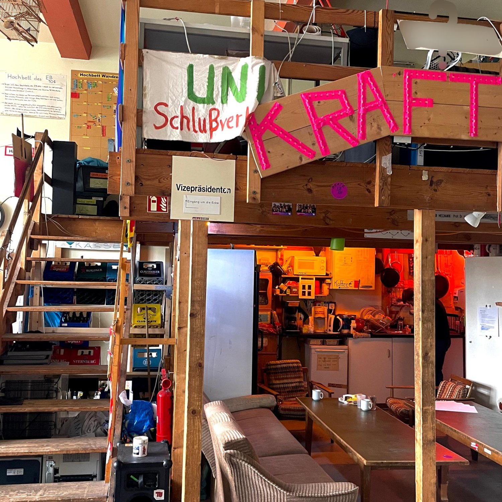
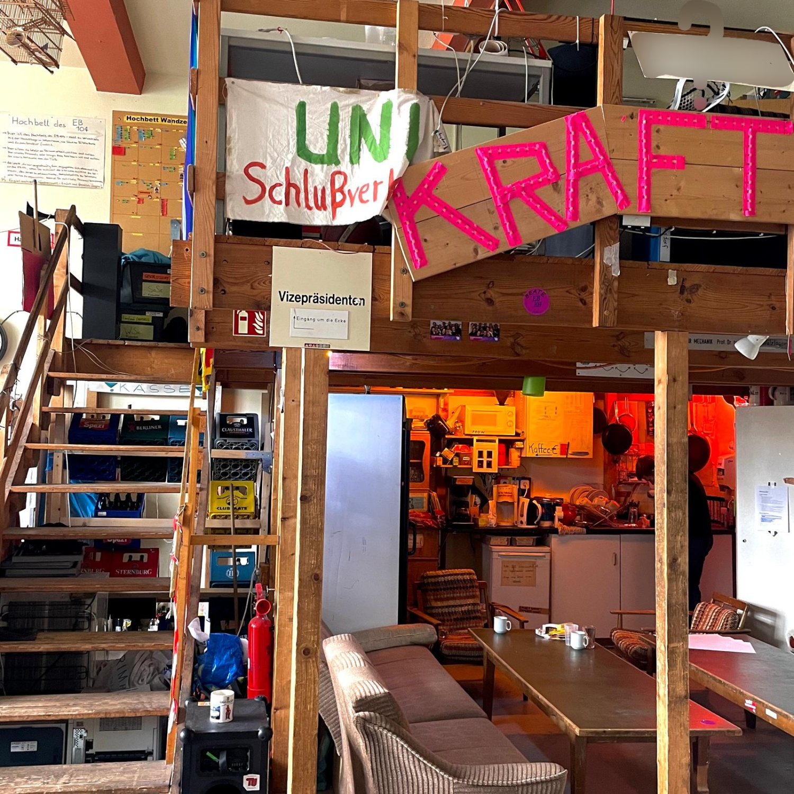
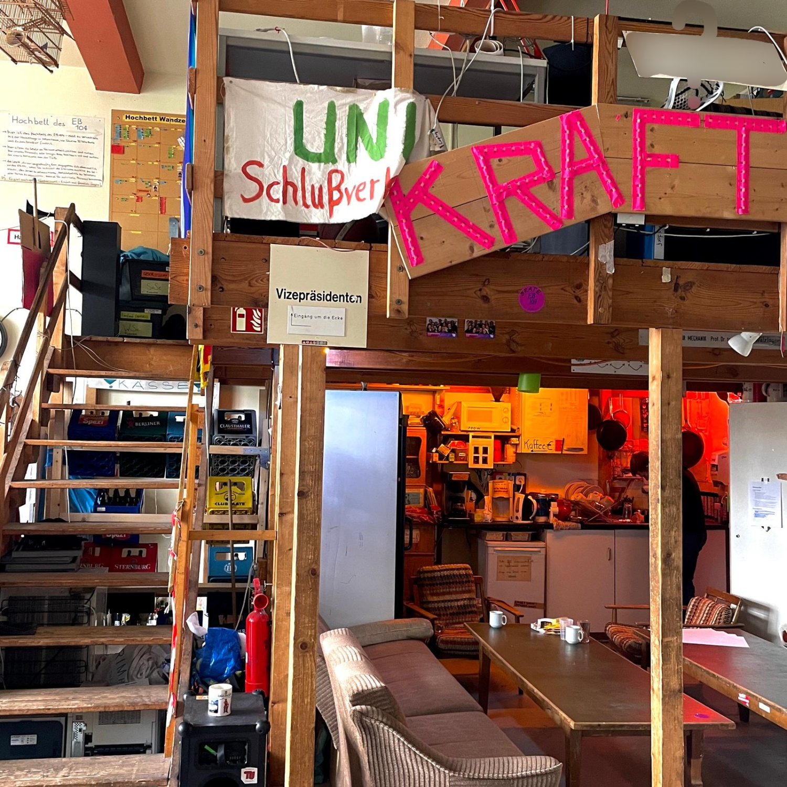

What to do: Check out the Initiative EB104 for some cool activities and events!

Next Magic Word: The next Magic Word is hiding in the blurred shield in the top right corner. It’s 9 letters, all caps, with no spaces or extra characters!
Next stop: Head over to the MAR-Building [MAR] next!
Sports classes: After checking out EB104, don’t miss the TU Gym! If you're keen on getting fit or trying something new, register for a TU Gym membership or sign up for some awesome sports courses at TU-Sport. Whether you want to play volleyball, dive into Brazilian Jiu-Jitsu, or splash around in the pool, there’s something for everyone, from newbies to pros. Just a heads up: course registration usually kicks off at the start of the semester, and spots can fill up super fast. So if you’ve got your eye on a specific class, make sure to grab your spot right when the booking opens!